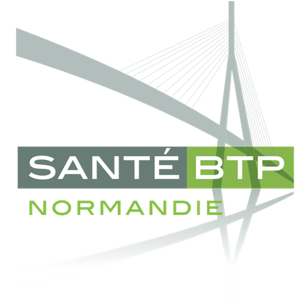
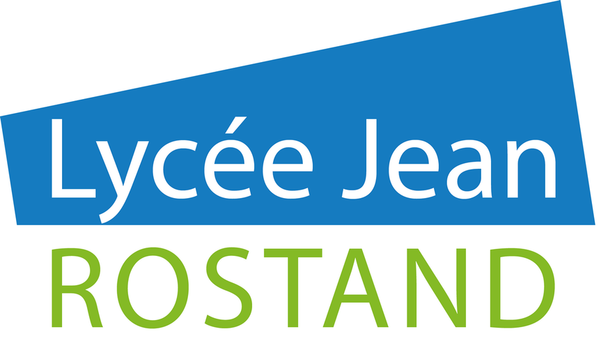

Profil
Étudiant en BTS SIO option SISR en alternance, après une première année en option SLAM (développement). Passionné par l'infrastructure et la cybersécurité. J'aime comprendre comment les choses fonctionnent, les automatiser et les documenter. Je recherche [une poursuite d'études / un poste] en administration systèmes et réseaux.
Expérience

Alternant informatique & téléphonie2025 — aujourd'hui
Santé BTP Normandie
- Déploiement et supervision de l’EDR HarfangLab (en cours)
- Administration du parc informatique avec NinjaOne
- Déploiement de la téléphonie Microsoft Teams et gestion du parc d’imprimantes
- Gestion des appareils FIM pour les examens complémentaires
- Projet de déploiement réseau Cisco Meraki
[Stage / job précédent][Date]
[Entreprise] · [Ville]
- [Mission principale]
Formation
BTS SIO — option SISR (alternance)2025 — 2027
MyDigitalSchool · Caen
- Administration Windows / Linux, réseaux, cybersécurité, virtualisation

BTS SIO — option SLAM (1ère année)2023 — 2024
Lycée Jean Rostand · Caen
- Développement web, programmation, bases de données (SQL) — puis réorientation vers SISR
Baccalauréat STI2D2023
Projets principaux
Déploiement de l’EDR HarfangLabEn cours · Santé BTP
- Déploiement de l’agent sur les postes et serveurs, politiques de sécurité, supervision des alertes (solution certifiée ANSSI)
Déploiement réseau Cisco MerakiSanté BTP
- Installation et configuration des équipements depuis le dashboard cloud Meraki (VLAN, Wi-Fi), mise en service
Administration du parc avec NinjaOneSanté BTP · Certifié
- Inventaire, mises à jour, déploiement de logiciels et prise en main à distance du parc
Projets secondaires
Entreprise · Santé BTP
- Téléphonie Microsoft Teams & parc imprimantes
- Appareils FIM — examens complémentaires
École · BTS SIO
- DataBridge — app web Docker, PostgreSQL, Vue.js
- Infrastructure Proxmox — VM Debian, SSH par clé
- pfSense — VLAN, NAT, DMZ, VPN OpenVPN
- Apache Guacamole — bastion RDP / SSH
- Active Directory — AD DS, DNS, OU, GPO
- GLPI — inventaire et tickets
- Portfolio web — HTML, CSS, JS
Certifications
🏅 NinjaOne Certified Technician2026
NinjaOne Academy · Administration de parc (RMM) · vérifier ↗
🏅 Certification PIX
Compétences numériques (certification officielle de l’État)